1LCall でできること・画面の見方
LCall は、LINE公式アカウントを使った集客・接客・配信・分析をひとつにまとめた管理画面です。専門知識がなくても、画面の案内に沿って操作できます。
主にできること
- 集客：登録用URLや広告コードで友だちを増やし、流入元を記録
- 接客：1:1チャット対応、AIによる自動応答、定型文・タグ管理
- 配信：一斉配信・予約配信・カルーセル・ステップ（シナリオ）配信
- 獲得：申込フォーム・アンケート・LP（ランディングページ）
- 分析：登録数・クリック・ブロック率などをグラフとCSVで把握
共通レイアウト（どの画面も同じ構成）
| 左：サイドバー | 機能の一覧。「概要・集客・顧客・配信・獲得・設定」のグループに分かれています。お使いの権限（ロール）によって表示される項目が変わります。 |
|---|
| 上：トップバー | 右上にログイン中のお名前・メールアドレス、その横に「ログアウト」。 |
|---|
| 中央：作業エリア | 選んだ機能の一覧や入力フォームが表示されます。重要な操作ボタン（新規作成など）は右上にあります。 |
|---|
デザインの見方ピンク〜紫のグラデーションは「重要な操作・選択中の項目・主要な数値」を表すアクセントです。グラデーションのボタン＝そのページの主役の操作、と覚えてください。
2ログインと権限（ロール）/login
配布されたメールアドレスとパスワードでログインします。アカウントごとに「権限（ロール）」が設定されており、権限によって見える画面・できる操作が変わります。
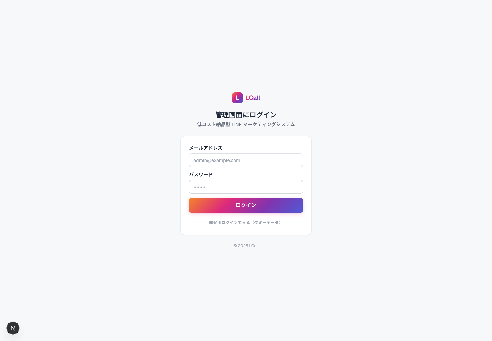
ログイン画面
ログイン手順
- ブラウザで管理画面のURLを開きます。
- メールアドレスとパスワードを入力します。
- グラデーションの「ログイン」ボタンを押すとダッシュボードに進みます。
3つの権限（ロール）と見える範囲
運用担当
配信・集客の担当者
- 配信・LINE設定
- フォーム/アンケート/LP
- 顧客・タグ・テンプレ
- ✕ 分析・お金・スタッフ管理
安全設計見えない画面は、メニューに表示されないだけでなく、URLを直接入力してもアクセスできない仕組みです。役割に応じて必要な範囲だけを安心して任せられます。スタッフの追加・権限の割り当ては「21. スタッフ管理」を参照してください。
3ダッシュボード/
ログイン直後に表示される、全体の状況がひと目でわかるホーム画面です。
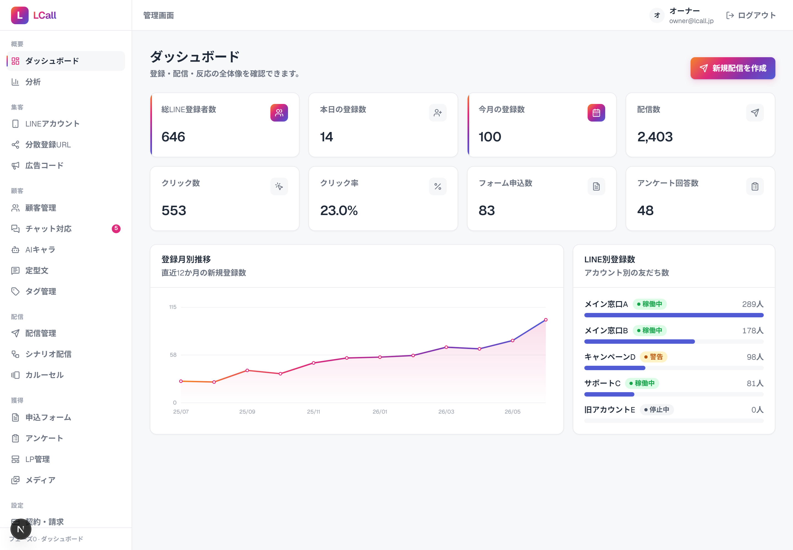
ダッシュボード（主要KPIと推移グラフ）
表示される数値（KPI）
- 総LINE登録者数 / 本日の登録数 / 今月の登録数：友だちの増え方
- 配信数・クリック数・クリック率：配信の反応
- フォーム申込数・アンケート回答数：獲得の状況
- 登録月別推移グラフと、LINEアカウント別の友だち数（稼働中／警告／停止中の状態つき）
使い方
- 毎日のはじめに開いて、登録・配信・反応の流れを確認します。
- 右上の「新規配信を作成」からすぐに配信づくりへ進めます。
- もっと詳しい数字は左メニューの「分析」へ。
4分析/analytics
登録・クリック・ブロックなどを、より詳しく確認・ダウンロードできる画面です。
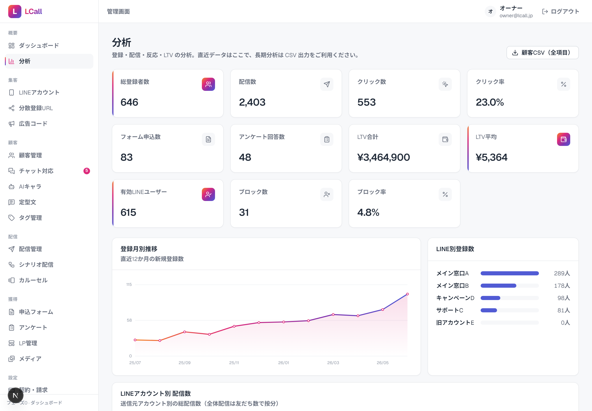
分析画面
確認できること
- ブロック数・ブロック率、ブロックを除いた実際に届くLINEユーザー数
- 登録月別のアクティブ率（その月に登録した友だちのうち、当月にアクセスがある割合）
- LINEアカウント別の総配信数 など
顧客データのダウンロード
- 画面内の「顧客CSV（全項目）」を押すとCSVファイルがダウンロードされます。
- LINE追加日時・最終アクセス・最終クリック・ブロック日時・最終配信日・流入元・LTV、さらにタグごとの保有状況まで一覧で出力されます。
- Excelやスプレッドシートで開いて、分析・名簿管理にご利用ください。
権限メモ分析画面はオーナーのみ表示されます。
5LINEアカウント/line-accounts
配信や受信に使うLINE公式アカウントを登録・管理します。複数アカウントの一括管理に対応しています。
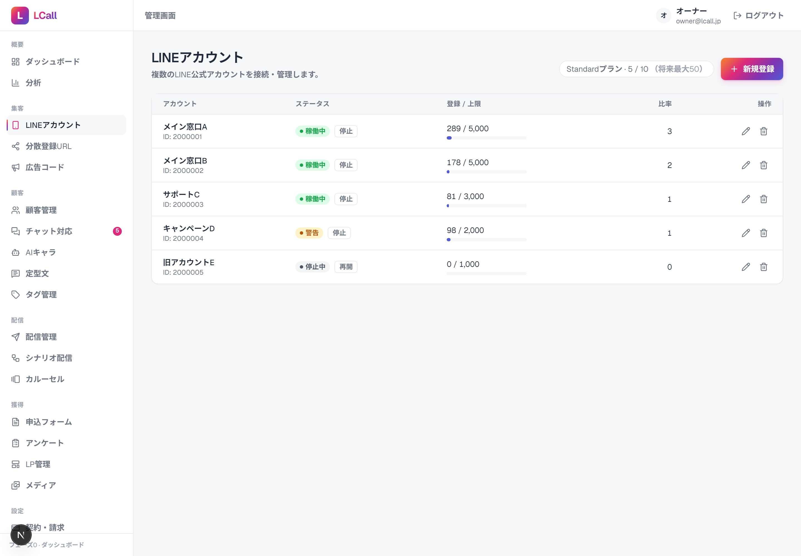
LINEアカウント一覧
できること
- アカウントの登録・編集（名称、チャネルの資格情報、友だち上限）
- 状態の管理：稼働中 警告 停止中
- Webhook URLの確認（LINE Developers に登録すると、友だち追加・メッセージ受信が届くようになります）
- AI自動応答の設定（オン/オフ、使うAIキャラ、APIキー）
初期設定の手順
- 「新規追加」からアカウント名と、LINEのチャネルシークレット／アクセストークンを入力します。
- 表示されたWebhook URLを LINE Developers の Webhook 設定に貼り付けます。
- 必要に応じてAI自動応答をオンにし、応対させるAIキャラを選びます（→「10. AIキャラ」）。
注意実際の送受信には、LINE公式アカウントのチャネル資格情報と、外部公開されたHTTPSのWebhook URLが必要です。資格情報の取得・登録は導入時にサポートします。
6分散登録URL/distribution
1本の登録URLへのアクセスを、複数のLINEアカウントへ自動的に振り分けます。1アカウントあたりの友だち上限対策や、窓口の負荷分散に使います。
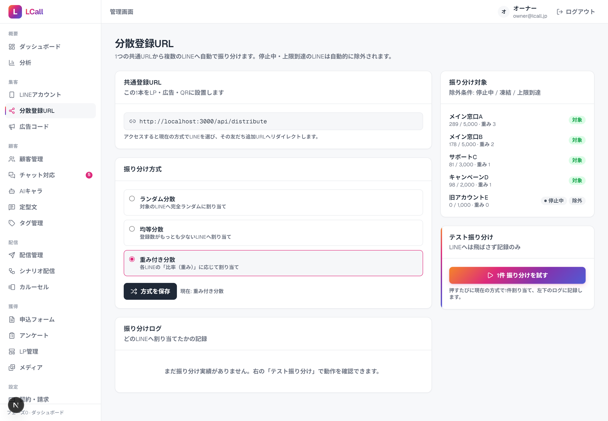
分散登録URL
振り分け方式
- 均等：各アカウントに均等に割り当て
- ランダム：ランダムに割り当て
- 重み付き：アカウントごとに比率を指定
- 満杯・停止中のアカウントを除外する設定も可能
使い方
- 振り分け先のLINEアカウントと方式を選びます。
- 発行された登録URLを広告・SNS・名刺などに掲載します。
- アクセスのたびに振り分けが行われ、振り分けログに記録されます。
7広告コード/ad-codes
「どの広告・媒体から友だち追加されたか」を記録するためのコードです。流入元を見える化できます。
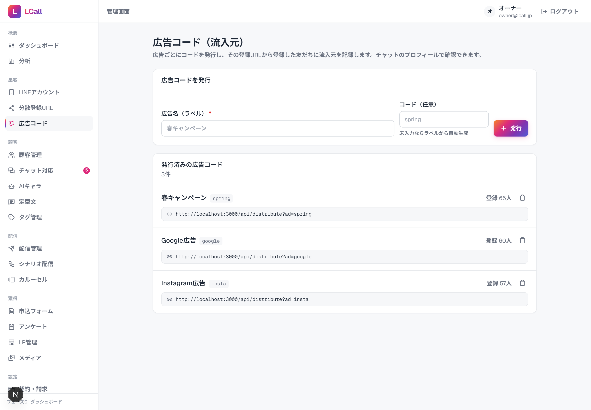
広告コード
使い方
- 媒体ごとに広告コード（例：春キャンペーン）を作成します。
- そのコード付きの登録URLを各媒体に掲載します。
- 友だち追加されると、その人の流入元として自動的に記録されます（チャットの顧客プロフィールや顧客CSVで確認できます）。
ポイント配信内リンクのクリック計測（→「13/15」）とも連動し、クリック経由の流入元も記録できます。
8顧客管理/friends
友だち（顧客）の一覧・検索・絞り込みと、一人ひとりの詳細確認ができます。
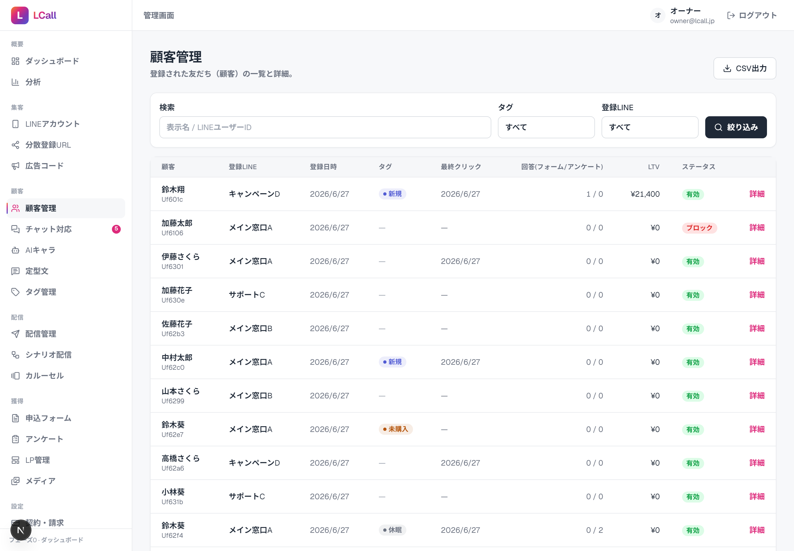
顧客一覧（状態・タグで絞り込み）
一覧でできること
- 名前・状態（有効／ブロック／解除）・タグでの絞り込み・検索
- 登録LINE・流入元・最終アクセスなどの一覧表示
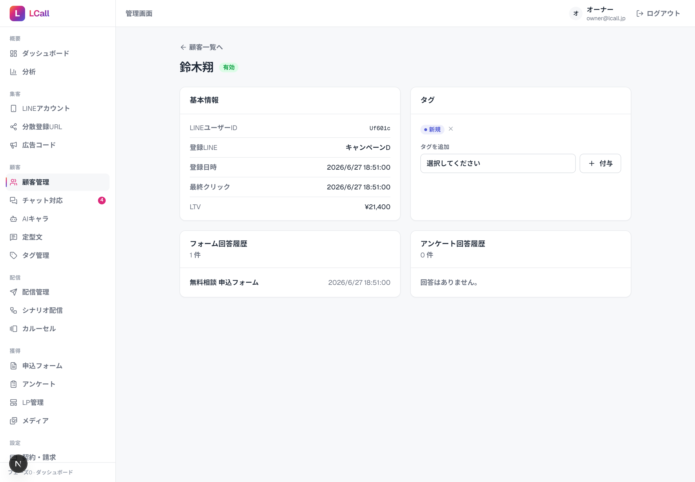
顧客詳細（プロフィール・タグ・履歴）
詳細でできること
- プロフィール、流入元、LTV（累計の価値）の確認
- タグの付与・解除、このお客様だけのAIキャラ指定
- そのままチャット対応へ移動
9チャット対応/inbox
お客様との1:1トークに対応する受信箱です。左にスレッド一覧、中央に会話、右にお客様のプロフィールが並びます。
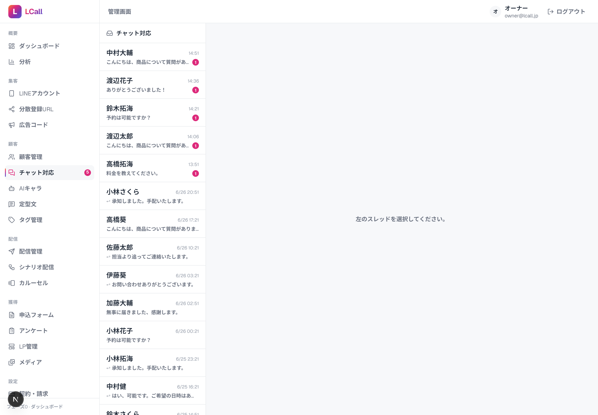
受信箱（未読件数はメニューにバッジ表示）
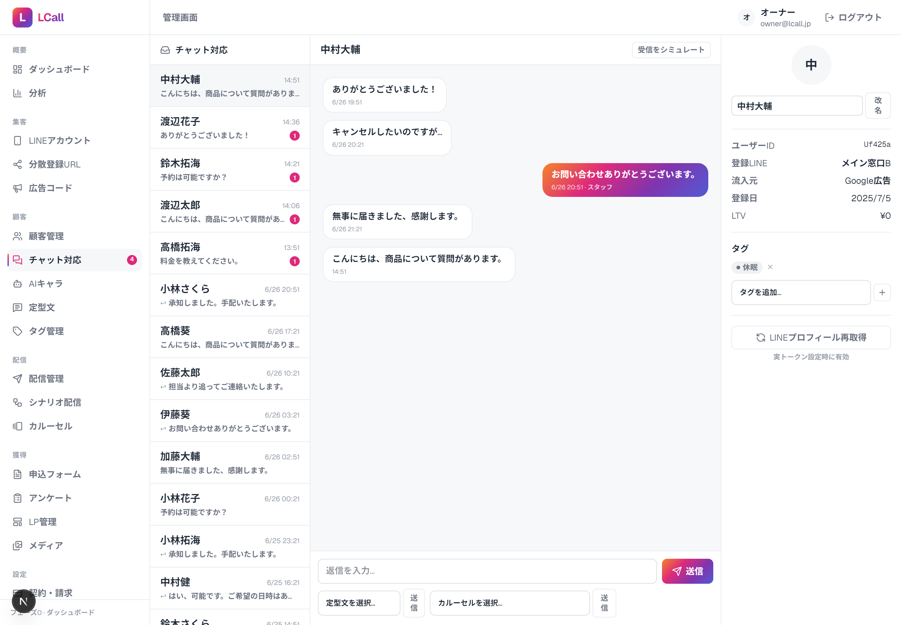
個別スレッド：会話＋プロフィール＋返信欄
対応の手順
- 左の一覧から対応したいお客様を選びます（開くと自動で既読になります）。
- 下部の入力欄から返信を送ります。定型文やカルーセルを選んで送ることもできます。
- 右パネルでお客様のタグ付与やLINEプロフィール再取得ができます。
AI自動応答との連携（有人切替）
- AI自動応答がオンのアカウントでは、受信に対してAIが自動で返信します（→「10. AIキャラ」）。
- スタッフが手動で返信すると、その相手のAIは自動的に一時停止します（人の対応を優先）。ヘッダーのトグルでAIを再開できます。
- 「受信をシミュレート」ボタンで、受信時の動きをテスト確認できます。
10AIキャラ（自動応答）/ai-characters
AI自動応答の「人格・話し方・知識」をまとめた設定です。キャラクター単位で作っておき、アカウントやタグ、個別のお客様に割り当てます。
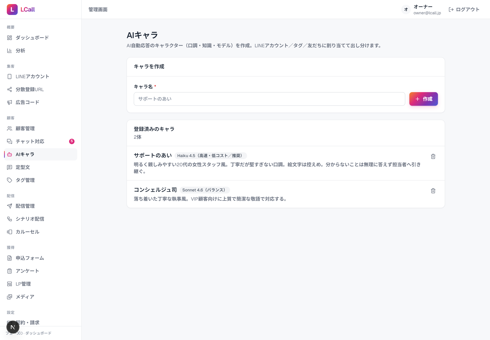
AIキャラ一覧
設定項目
- 名前・ペルソナ（口調や役割の指示）・FAQ（よくある質問と回答）・使用モデル
どのキャラで応答するかの優先順位
- そのお客様に個別指定があれば、それを使用
- なければ、その人が持つタグに紐づくキャラ
- それも無ければ、LINEアカウントの既定キャラ
料金についてAIの自動応答は1応対あたり ¥3の従量課金です。実際に生成するには ANTHROPIC のAPIキー設定が必要で、未設定時はAIは応答しません（安全側）。利用状況は「20. 契約・請求」で確認できます。
11定型文/message-templates
よく使う返信文を登録しておき、チャット対応でワンタップ送信できます。
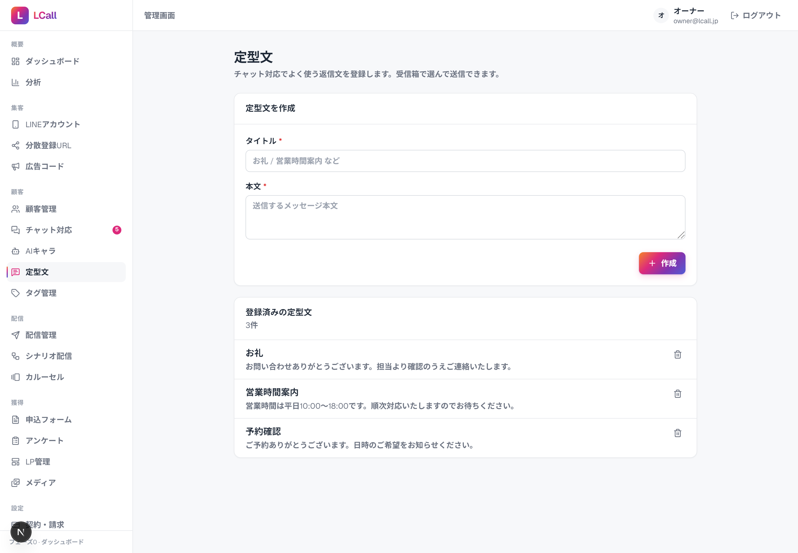
定型文管理
使い方
- 挨拶・営業時間・よくある回答などを定型文として登録します。
- チャット画面の「定型文を選択」から呼び出して送信します。
13配信管理/broadcasts
友だちへのメッセージ配信を作成・予約・管理します。テキスト／URL／カルーセルに対応し、過去の配信履歴も確認できます。
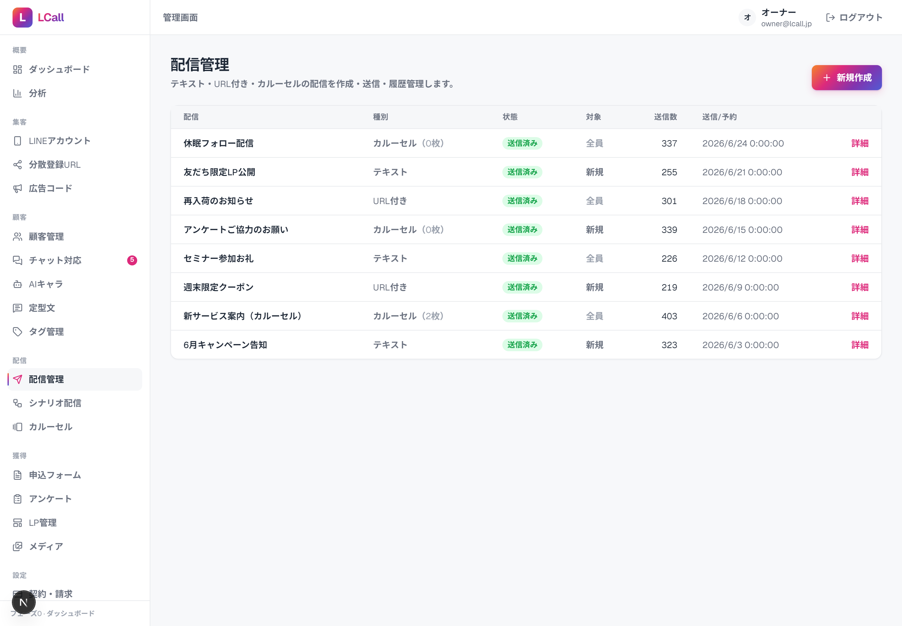
配信履歴一覧
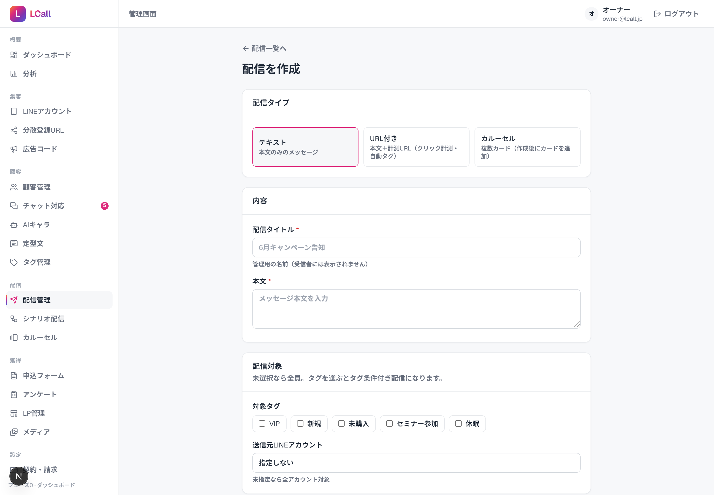
新規配信の作成
配信を作る手順
- 右上の「新規作成」を押し、種別（テキスト／URL／カルーセル）を選びます。
- タイトル・本文を入力し、対象タグと送信元のLINEアカウントを選びます。
- URL種別では、リンクにクリック計測と自動タグ付与を設定できます。
- 今すぐ送る場合は「送信」、後で送る場合は予約日時を設定します。
テンプレートよく使う配信はテンプレートとして保存し、次回ワンクリックで再利用できます。予約した配信は時刻になると自動送信されます。
14シナリオ配信/scenarios
友だち追加などをきっかけに、時間差で複数のメッセージを自動配信する「ステップ配信」です。
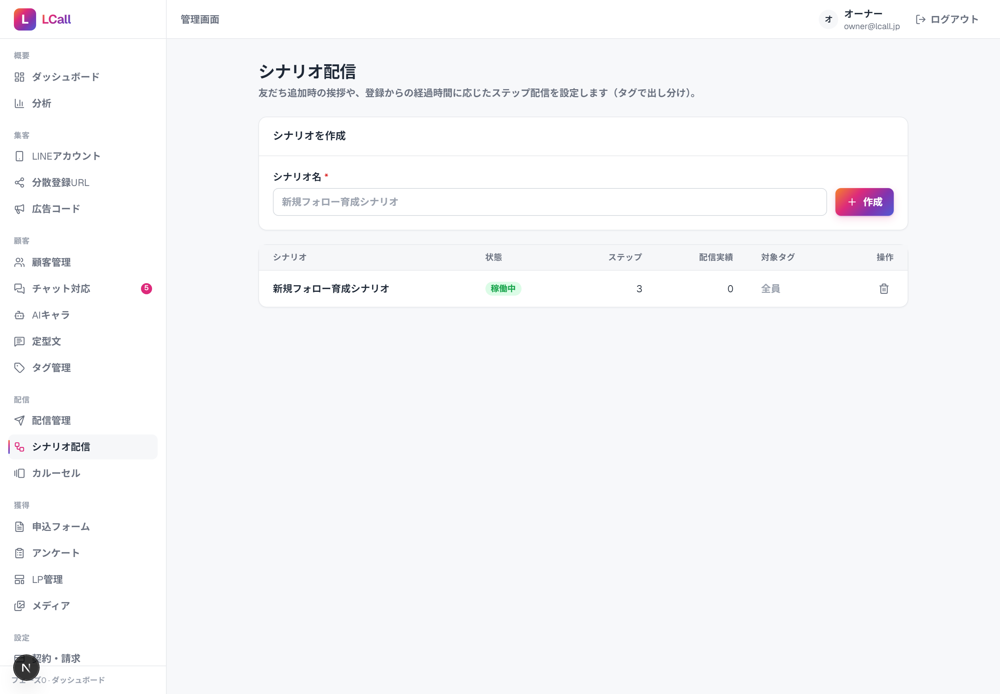
シナリオ配信
できること
- ステップごとに経過時間や配信時刻を指定（例：追加直後に挨拶 → 翌日に案内 → 3日後にクーポン）
- タグによる条件分岐（例：特定タグを持つ人だけ別メッセージ）
- テキストだけでなくカルーセルのステップも設定可能
使い方
- シナリオを作成し、対象タグと各ステップ（内容・タイミング・付与タグ）を設定します。
- 友だち追加などのきっかけで自動的に進行します。同じ人への重複配信は自動で防止されます。
15カルーセル/carousel
横スワイプで複数のカード（画像＋見出し＋ボタン）を見せる、リッチな配信です。商品紹介やメニュー表示に向いています。
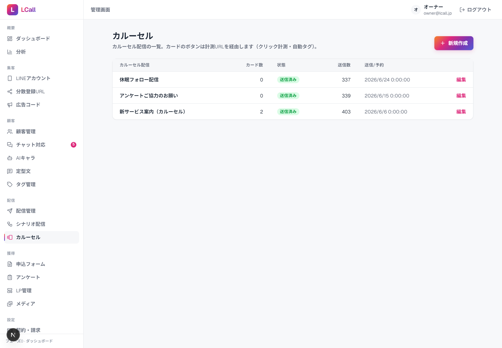
カルーセル配信
カードの設定
- 1枚ごとに画像・タイトル・説明・ボタン文言・遷移先URL・付与タグを設定
- 画像はアップロード／メディアから選択／URL指定の3通り
- ボタンのリンクはクリック計測に対応
注意実際のLINE配信では、カルーセルの画像はHTTPSのURLが必要です。画像保管（メディア／R2）を使うと自動でHTTPSになります。
17アンケート/surveys
満足度調査やニーズ把握のためのアンケートを作成・公開し、結果を集計できます。
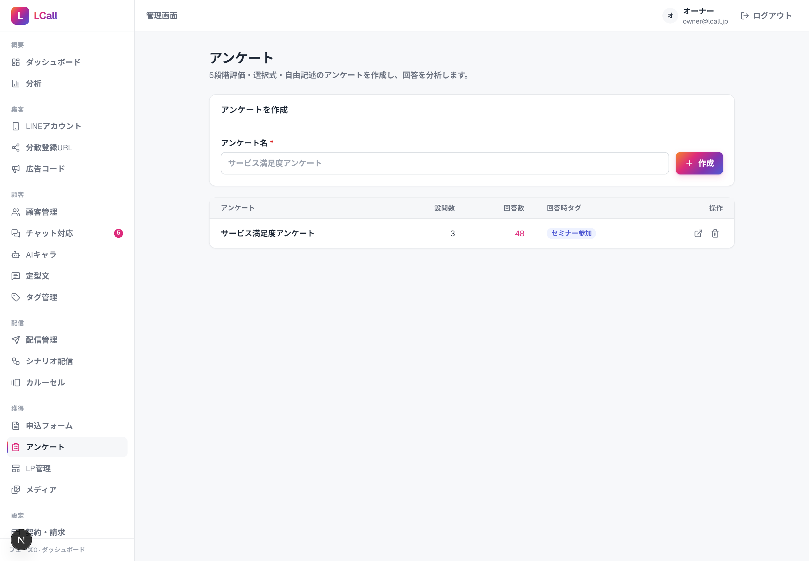
アンケート一覧
使い方
- 設問を作成し、公開URLを案内します。
- 回答は自動集計され、画面で分析できます。回答者へのタグ付与も可能です。
18LP管理/landing-pages
友だち登録や申込みへ誘導する、簡易なランディングページ（LP）を作成・公開できます。
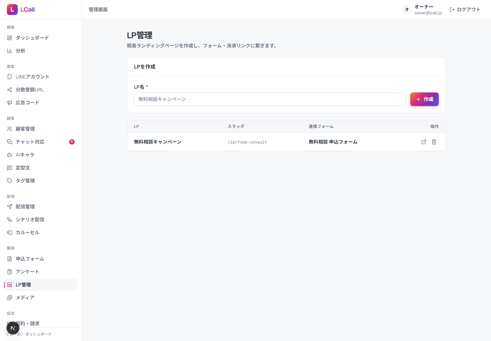
LP管理
使い方
- LPを作成し、見出し・本文・登録ボタンなどを編集します。
- 公開URLを広告やSNSで案内し、友だち登録・申込みへ誘導します。
20契約・請求/billing
ご契約プランの確認・変更と、お支払い履歴を管理します。
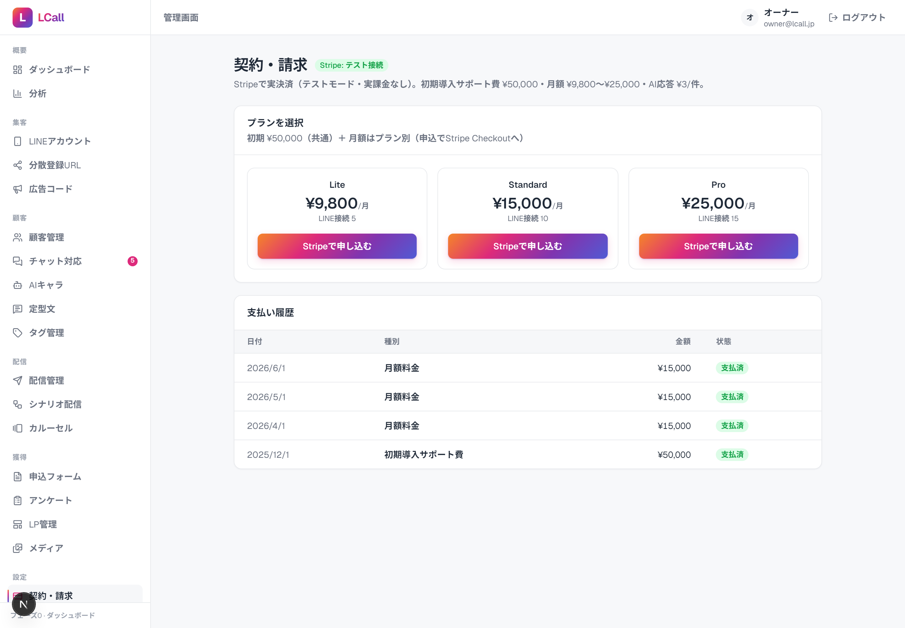
契約・請求（プランと支払い履歴）
料金プラン
| Lite | 月額 ¥9,800（LINE接続 5） |
|---|
| Standard | 月額 ¥15,000（LINE接続 10） |
|---|
| Pro | 月額 ¥25,000（LINE接続 15） |
|---|
- 初期導入サポート費：¥50,000（共通・初回のみ）
- AI自動応答：¥3／応対（使った分だけ）
- お支払いは安全な決済（Stripe）。プラン申込・変更、お支払い履歴の確認ができます。
権限メモ契約・請求はオーナーのみ表示されます。LINEのメッセージ送信料はお客様ご自身のLINE公式アカウント側のご契約に準じます。
21スタッフ管理/staff
オーナーが、運用担当・チャット対応などのスタッフアカウントを自分で発行・管理できます。
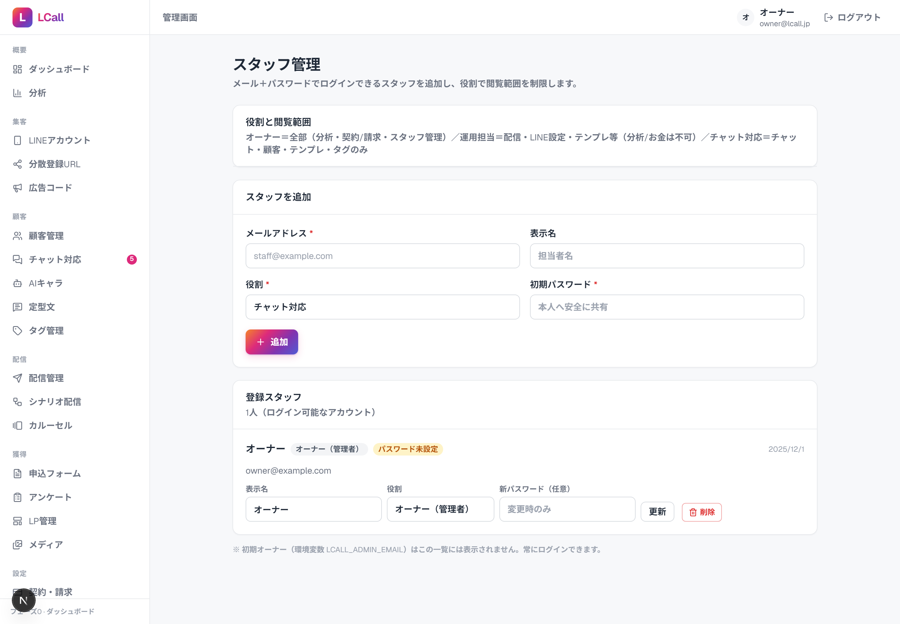
スタッフ管理（オーナー専用）
スタッフを追加する手順
- メールアドレス・初期パスワード・権限（運用担当／チャット対応）を入力して追加します。
- 発行した情報を本人に伝えます。本人はそのメール・パスワードでログインします。
- 権限に応じてメニューが自動的に絞り込まれ、不要な画面は開けません。
- 退職・担当変更の際は、編集で権限を変更、または削除します。
注意スタッフ管理はオーナーのみがアクセスできます。パスワードは安全に管理し、共有は避けてください。
22よくある質問・運用のヒント
よくある質問
| ログインできません | メールアドレス／パスワードをご確認ください。不明な場合はオーナー（管理者）にスタッフ情報の再発行を依頼してください。 |
|---|
| メニューに無い画面があります | 権限（ロール）によって表示が変わります。必要であればオーナーに権限変更を依頼してください。 |
|---|
| 配信が届きません | 送信元LINEアカウントが「稼働中」か、対象タグの人数が0でないかをご確認ください。予約配信は設定時刻に自動送信されます。 |
|---|
| AIが返信しません | アカウントのAI自動応答がオンか、APIキーが設定済みか、相手のAIが一時停止になっていないかをご確認ください。 |
|---|
| 顧客データを書き出したい | 「4. 分析」の「顧客CSV（全項目）」からダウンロードできます。 |
|---|
運用のヒント
- 毎日：ダッシュボードで状況確認 → チャットの未読対応
- 集客時：広告ごとに広告コードを発行し、流入元を比較
- 配信前：タグで対象を絞り、URLにはクリック計測を設定
- 友だち追加時：シナリオ配信で挨拶〜育成を自動化
用語集
| 友だち | LINE公式アカウントを登録したお客様。 |
|---|
| タグ | お客様を分類するラベル。配信の絞り込みに使う。 |
|---|
| カルーセル | 横スワイプで複数カードを見せるリッチな配信。 |
|---|
| シナリオ（ステップ配信） | きっかけから時間差で自動配信する仕組み。 |
|---|
| 流入元 | どの広告・経路から友だち追加されたか。 |
|---|
| ロール | ログインアカウントの権限（オーナー／運用担当／チャット対応）。 |
|---|